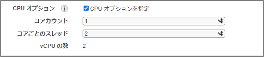

EC2のハイパースレッディングを無効化する方法
lscpuで確認した場合にハイパースレッディングが有効な場合は、Thread(s) per coreが2となる。
[ec2-user@ip-10-0-1-47 ~]$ lscpu
Architecture: x86_64
CPU op-mode(s): 32-bit, 64-bit
Byte Order: Little Endian
CPU(s): 2
On-line CPU(s) list: 0,1
Thread(s) per core: 2
Core(s) per socket: 1
Socket(s): 1
NUMA node(s): 1
Vendor ID: GenuineIntel
CPU family: 6
Model: 85
Model name: Intel(R) Xeon(R) Platinum 8259CL CPU @ 2.50GHz
Stepping: 7
CPU MHz: 2499.998
BogoMIPS: 4999.99
Hypervisor vendor: KVM
Virtualization type: full
L1d cache: 32K
L1i cache: 32K
L2 cache: 1024K
L3 cache: 36608K
NUMA node0 CPU(s): 0,1
Flags: fpu vme de pse tsc msr pae mce cx8 apic sep mtrr pge mca cmov pat pse36 clflush mmx fxsr sse sse2 ss ht syscall nx pdpe1gb rdtscp lm constant_tsc rep_good nopl xtopology nonstop_tsc aperfmperf eagerfpu pni pclmulqdq ssse3 fma cx16 pcid sse4_1 sse4_2 x2apic movbe popcnt tsc_deadline_timer aes xsave avx f16c rdrand hypervisor lahf_lm abm 3dnowprefetch invpcid_single fsgsbase tsc_adjust bmi1 avx2 smep bmi2 erms invpcid mpx avx512f avx512dq rdseed adx smap clflushopt clwb avx512cd avx512bw avx512vl xsaveopt xsavec xgetbv1 ida arat pku ospke
cpuinfoを確認するとこのような表示。
[ec2-user@ip-10-0-1-47 ~]$ cat /proc/cpuinfo | grep -e 'core id' -e processor
processor : 0
core id : 0
processor : 1
core id : 0
ハイパースレッディングを無効化する方法1
下記コマンドを実行するこの環境の場合、cpu0とcpu1があって、CPU1の方を無力化する。この場合、ハイパースレッディングは無効化されるが、再起動した場合には元に戻ってしまう。再起動時に同じコマンドを叩くということも選択肢となるが、スクリプトを作るなど多少の面倒くささが残る。
sudo su -
echo 0 > /sys/devices/system/cpu/cpu1/online
ハイパースレッディングを無効化する方法2
CPU オプションの最適化 - Amazon Elastic Compute Cloud https://docs.aws.amazon.com/ja_jp/AWSEC2/latest/UserGuide/instance-optimize-cpu.html#instance-cpu-options-rules
上記マニュアルにある通り、インスタンスの作成時にのみCPUオプションを選択出来るようになっている。この機能を使用可能なインスタンスタイプの場合は、インスタンス作成時にこんな選択画面が表示される。

ここのコアごとのスレッドを1にすることでハイパースレッディングを無効化することも出来る。AWS CLIで指定することも可能で、その場合は次の通り--cpu-optionsを指定する。
aws ec2 run-instances --image-id ami-xxxxxxxx --instance-type m5.large --cpu-options "CoreCount=1,ThreadsPerCore=1" --key-name keypair
起動後に設定を確認する。
[ec2-user@bastin ~]$ aws ec2 describe-instances --instance-ids i-01842d7da54e0c630 --query "Reservations[].Instances[].CpuOptions"
[
{
"CoreCount": 1,
"ThreadsPerCore": 1
}
]
lscpuコマンドを叩いた場合にも、ハイパースレッディングが無効化されていることを確認出来る。
[root@ip-10-0-1-47 ~]# lscpu
Architecture: x86_64
CPU op-mode(s): 32-bit, 64-bit
Byte Order: Little Endian
CPU(s): 2
On-line CPU(s) list: 0
Off-line CPU(s) list: 1
Thread(s) per core: 1
Core(s) per socket: 1
Socket(s): 1
NUMA node(s): 1
Vendor ID: GenuineIntel
CPU family: 6
Model: 85
Model name: Intel(R) Xeon(R) Platinum 8259CL CPU @ 2.50GHz
Stepping: 7
CPU MHz: 2499.998
BogoMIPS: 4999.99
Hypervisor vendor: KVM
Virtualization type: full
L1d cache: 32K
L1i cache: 32K
L2 cache: 1024K
L3 cache: 36608K
NUMA node0 CPU(s): 0
Flags: fpu vme de pse tsc msr pae mce cx8 apic sep mtrr pge mca cmov pat pse36 clflush mmx fxsr sse sse2 ss ht syscall nx pdpe1gb rdtscp lm constant_tsc rep_good nopl xtopology nonstop_tsc aperfmperf eagerfpu pni pclmulqdq ssse3 fma cx16 pcid sse4_1 sse4_2 x2apic movbe popcnt tsc_deadline_timer aes xsave avx f16c rdrand hypervisor lahf_lm abm 3dnowprefetch invpcid_single fsgsbase tsc_adjust bmi1 avx2 smep bmi2 erms invpcid mpx avx512f avx512dq rdseed adx smap clflushopt clwb avx512cd avx512bw avx512vl xsaveopt xsavec xgetbv1 ida arat pku ospke
その他
Amazon EC2 インスタンスタイプ
https://aws.amazon.com/jp/ec2/instance-types/
M6g インスタンス、A1 インスタンス、T2 インスタンス、m3.medium を除き、各 vCPU はインテル Xeon コアまたは AMD EPYC コア上のスレッドです。
上記の通り、いくつかのインスタンスは最初からハイパースレッディングは無効となっている。ハイパースレッディングという用語はIntel用語なので、AMDには適用されないため、スレッドという言い方をしていると推測。